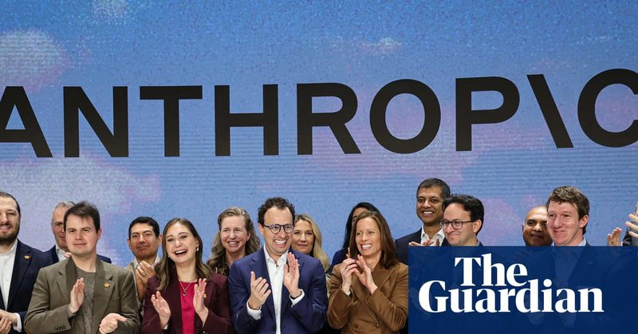
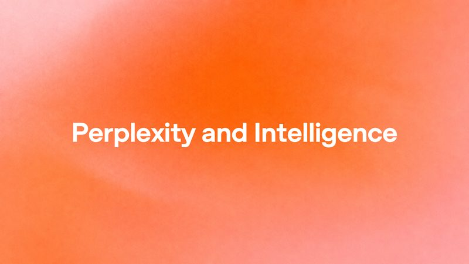
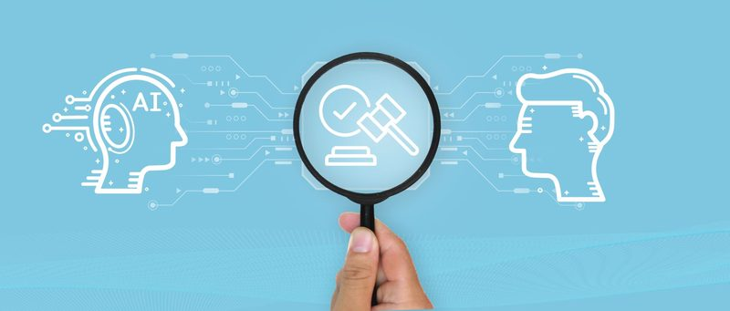
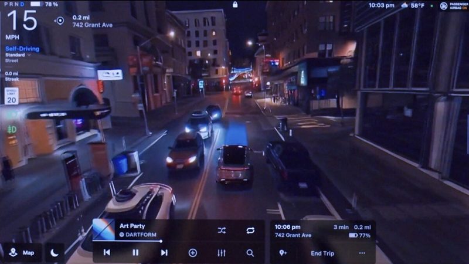
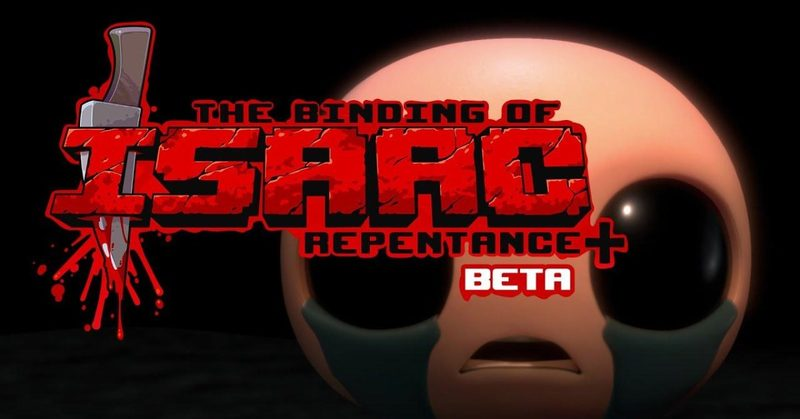
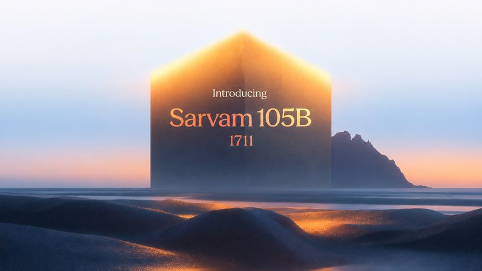

今日頭條
Lean 社群認證 Claude 協助的黎曼猜想證明 PLUS：OpenAI 首席科學家提議用困惑度替 AI 設上限
本期重點：Lean 與 Mathlib 社群發表聯合聲明，確認 Anthropic 數學家 Levent Alpöge 借助 Claude 完成的黎曼猜想 Lean 證明正確；OpenAI 首席科學家 Jakub Pachocki 公開內部困惑度數據，提議業界用共同指標替 AI 發展設上限。另有美國州長協會提出 AI 治理原則、OpenRouter 因供應商外洩提示詞下架三家業者、國內銀行導入 AI 防駭、Tesla FSD v15 推出 AI 生成的行車畫面、《以撒的結合》移除 AI 音樂，以及印度 Sarvam 開源降價的 105B 模型。週末新聞較少，部分題材為前期事件的後續進展。
📋 2026/11/23（一） 共 8 則 後續：Lean 社群認證 Claude 協助的黎曼猜想證明 OpenAI 首席科學家提議用困惑度替 AI 設上限 美國州長協會提 AI 治理原則，要聯邦與州分工 OpenRouter 下架三家模型供應商，因提示詞外洩 國內銀行攻擊量翻倍，導入 AI 協助防駭 Tesla FSD v15 上路，行車畫面改由 AI 即時生成 《以撒的結合》被抓用 AI 音樂，更新移除 印度 Sarvam 開源新版 105B 模型，價格砍三分之二 
圖：The Guardian／Reuters（Brendan McDermid） 研究 #1 後續：Lean 社群認證 Claude 協助的黎曼猜想證明 Lean 與 Mathlib 社群 11 月 21 日發表聯合聲明（Lean FRO 與 Mathlib Initiative 背書），表示對 Anthropic 數學家 Levent Alpöge 的黎曼猜想證明「有完全信心」。聲明說，這份約 1,700 萬行的 Lean 程式庫已由數十人重現編譯，定理內容經兩套獨立工具比對與 Mathlib 的黎曼猜想敘述完全一致，並通過 Lean 官方核心與多個獨立驗證程式檢查。
💡 跟你有什麼關係： 這是 AI 協助解出頂尖數學難題後，第一次有獨立團體用機器檢查背書；以後判斷 AI 研究成果真假，「能不能被機器驗證」會越來越重要。
⚠️ 這是前期（11/21、11/22）黎曼猜想報導的新進展。機器驗證不等於期刊同儕審查，數學家仍需時間理解證明背後的數學，克雷研究所百萬美元獎金也另有審查程序。
📰 原始來源：Lean community blog（2026-11-21） ↗ 
圖：OpenAI 觀點 #2 OpenAI 首席科學家提議用困惑度替 AI 設上限 OpenAI 首席科學家 Jakub Pachocki 11 月 22 日發表〈Perplexity and Intelligence〉，首度公開內部預訓練的困惑度（預測下一個字的誤差）數據：GPT-3.5 約 0.99、GPT-4 約 0.91，降到 0.8 以下後模型在資安與數學出現突破。他提議各家 AI 公司以困惑度等指標訂定共同上限，在監控與理解 AI 的能力達到具體里程碑前不越過。
💡 跟你有什麼關係： AI 該不該「踩煞車」一直缺乏可以比較的量尺；如果業界真的採用共同指標，未來新模型推出的速度與安全審查方式都可能改變。
⚠️ 這是個人提案，文中沒有給出具體上限數值，也承認不同公司的資料集不同、數字難以直接比較。
📰 原始來源：OpenAI（2026-11-22） ↗ 
圖：National Governors Association 政策 #3 美國州長協會提 AI 治理原則，要聯邦與州分工 美國全國州長協會（NGA）11 月 22 日由跨黨派的 AI 州長委員會（馬里蘭州長 Wes Moore、印第安納州長 Mike Braun 等人領銜）發表 AI 治理原則。重點包括：聯邦處理全國與國際層級的風險，州保留保護民眾的彈性；保障勞工轉職；依可信證據設定相稱的規範；減少重複與衝突的法規，不偏袒大公司。
💡 跟你有什麼關係： 美國聯邦與各州誰來管 AI 的拉鋸，會影響 ChatGPT、Gemini 等服務在兒少保護、隱私與工作權方面的規則，也常被其他國家立法參考。
⚠️ 這是政策原則與對國會的建議，不具法律效力。
📰 原始來源：National Governors Association（2026-11-22） ↗ 圖：Ars Technica 新聞 #4 OpenRouter 下架三家模型供應商，因提示詞外洩 AI 模型路由平台 OpenRouter 11 月 22 日公告，依資安公司 Dragos 的研究與自家調查，已將三家推論供應商移出平台，並把 125 個端點移出「零資料保留」資格，同時通知可能受影響的客戶。Dragos 先前在約 200 萬則測試提示詞中埋入可追蹤的假金鑰與網址，發現部分供應商的資料遭外洩、提示詞被讀取。
💡 跟你有什麼關係： 很多 AI App 背後透過路由平台轉給便宜的第三方伺服器，你輸入的內容可能經過好幾手；不要把密碼、金鑰、身分資料貼給 AI 服務。
⚠️ Dragos 研究於 11/19 發表，本則新進展為 OpenRouter 11/22 的下架處置。OpenRouter 表示自身未遭入侵，也未公開被下架的三家名稱。
📰 原始來源：OpenRouter（2026-11-22） ↗ 圖：Taipei Times／EPA 新聞 #5 國內銀行攻擊量翻倍，導入 AI 協助防駭 中央社 11 月 22 日報導，合庫銀行今年前 10 月的月均攻擊量約為去年的 2 倍，8 到 10 月就占全年約 8 成；一銀網站應用程式防火牆前 10 月攔下約 220 萬次攻擊。一銀已導入具 AI 分析能力的偵測應變系統，台銀、合庫也用 AI 協助分析攻擊，但對 AI 代理的應用仍審慎評估。
💡 跟你有什麼關係： 網銀與銀行官網是主要攻擊目標；銀行加強防禦之外，自己也要開啟交易通知，遇到異常交易先找銀行，必要時報警或向金管會申訴。
⚠️ 銀行表示目前尚未發現可明確認定由 AI 自主發動的攻擊。
📰 原始來源：經濟日報／中央社（2026-11-22） ↗ 
圖：Tesla on X／Gizmodo 新上線 #6 Tesla FSD v15 上路，行車畫面改由 AI 即時生成 Tesla 11 月 21 日開始向部分車輛推送 FSD（Supervised）v15，官方稱處理安全關鍵情境的能力提升 25 倍。最受注目的是 Reality View：用 AI 即時生成車輛周圍的擬真畫面，視角像從車後上方跟拍，讓駕駛看到並調整 FSD 打算怎麼開；Elon Musk 形容「像 GTA」。
💡 跟你有什麼關係： 這是 AI 生成影像從娛樂走進車內介面的例子；車用畫面是 AI「畫」出來的，看起來再真也可能和實際路況有落差。
⚠️ 二手報導（Gizmodo 引 Tesla 官方 X 貼文）。安全提升 25 倍為 Tesla 自評，FSD 在台灣尚未開放。
📰 原始來源：Gizmodo（2026-11-21） ↗ 
圖：Nicalis, Inc.／The Verge 新聞 #7 《以撒的結合》被抓用 AI 音樂，更新移除 獨立遊戲《以撒的結合：懺悔+》被玩家在 GTA 惡搞關卡中發現多段帶有 Suno 標記的 AI 生成音樂，Steam 評價遭大量負評洗版。原作者 Edmund McMillen 在 X 道歉並表示「完全不知情」，發行商 Nicalis 在數小時內推出 PC 版更新，移除這些音樂檔。
💡 跟你有什麼關係： Steam 要求開發者揭露生成式 AI 的使用，玩家對沒說清楚的 AI 內容反彈很大；買遊戲或內容時，可以留意商店頁的 AI 使用聲明。
⚠️ 二手報導（The Verge）。截至報導時 Steam 評價仍為「壓倒性負評」，主機版更新時程未確認。
📰 原始來源：The Verge（2026-11-22） ↗ 
圖：Sarvam AI 工具 #8 印度 Sarvam 開源新版 105B 模型，價格砍三分之二 印度 AI 公司 Sarvam 11 月 22 日釋出開放權重模型 Sarvam-105B-1711，主打客服、語音代理等大量工作。官方稱八項對話代理測試平均從 42.6 升到 73.9，與 Gemini 3.5 Flash-Lite 的 74.0 相當，混合價格從每百萬 token 0.44 美元降到 0.15 美元；權重已上架 Hugging Face，65 GB 的 NVFP4 版可在單張工作站 GPU 執行。
💡 跟你有什麼關係： 開源模型越來越便宜、越來越好用，企業可以自己架設客服 AI，不一定要把資料交給大型雲端服務。
⚠️ 測試成績與價格比較皆為官方自評。
📰 原始來源：Sarvam AI（2026-11-22） ↗ ✅ 2026/11/23（一） 可以做： 如果你有用 OpenRouter 這類「AI 路由」服務串接模型，記得不要把密碼、API 金鑰等機密直接貼進提示詞；收到服務商的通知信時，先換掉曾經出現在提示詞裡的金鑰。
🗂️ 過去 14 天